Ekran kluczowy: prowadzenie wypieku. Lewa para: krok w trakcie (składanie 2 z 4), prawa para: koniec kroku z ostrzeżeniem (zdejmij pokrywę). Górny rząd jasny, dolny ciemny. 390 pt. Dane planu: [PRZYKŁAD]. Treść: na iOS SF Pro; w makiecie zastępczo Noto Sans (kroju treści nie oceniamy na tym zrzucie). Szczegóły: docs/design/02-kierunki.md.
Cały wypiek to zwoje koszyka do garowania: od środka (start) do brzegu (gotowe).
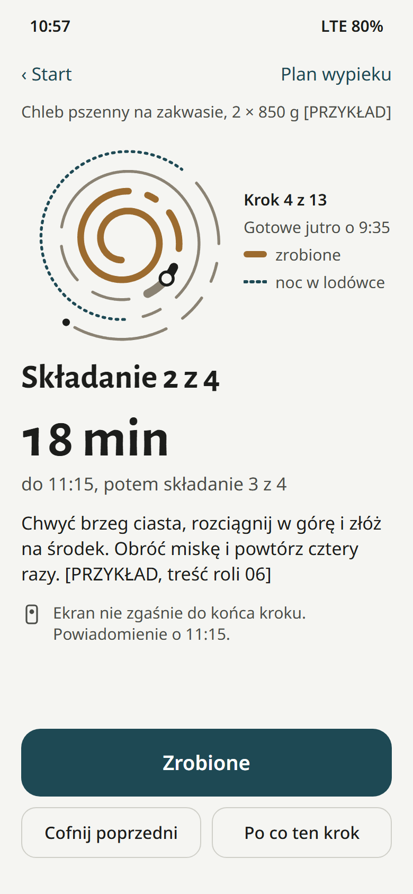
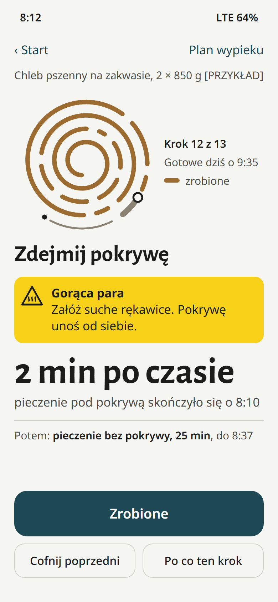
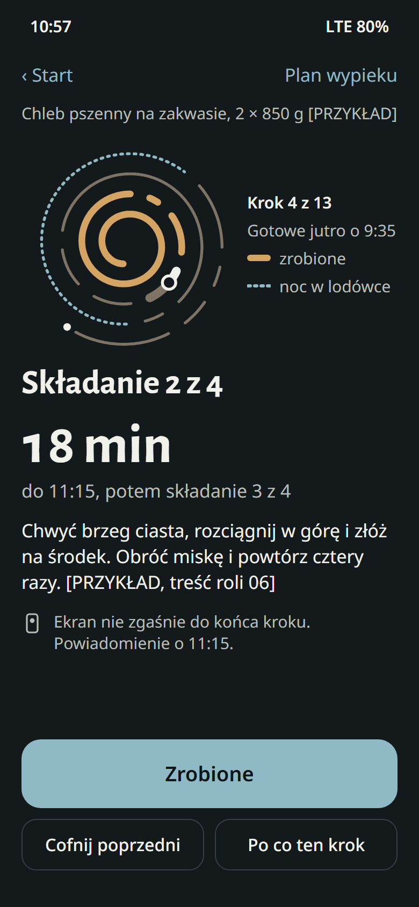
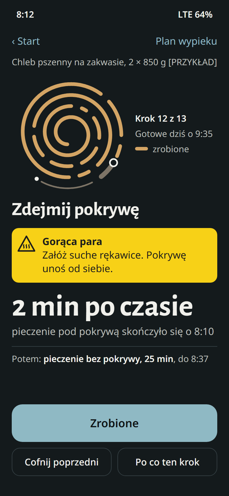
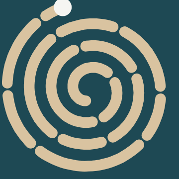
Tytuły: Alegreya Sans. Paleta: płótno, żeliwo, ratan, noc.Każdy proces to słoik z kreskami: gumka znaczy start, czerwona kreska koniec kroku.
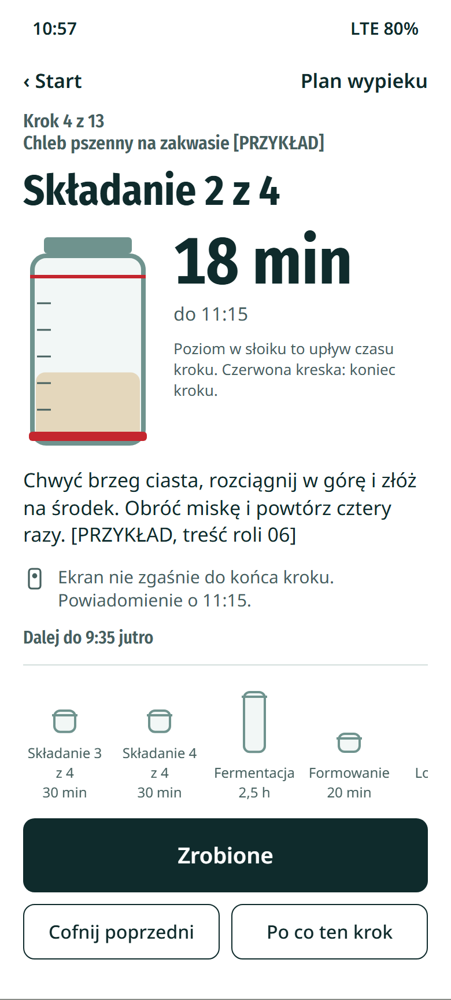
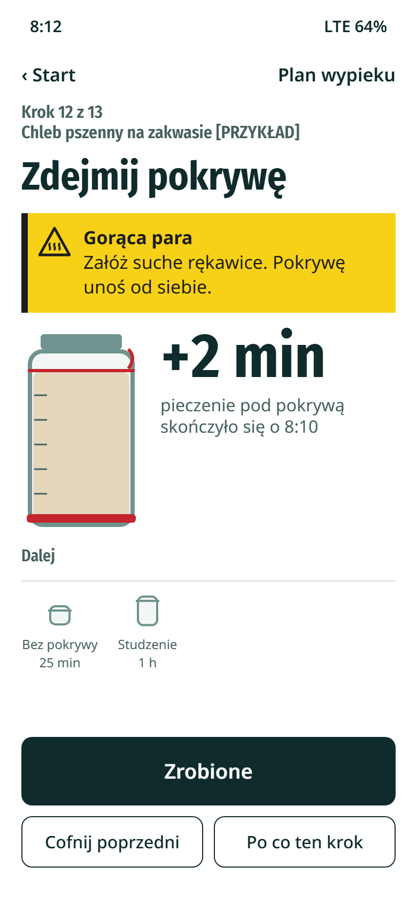
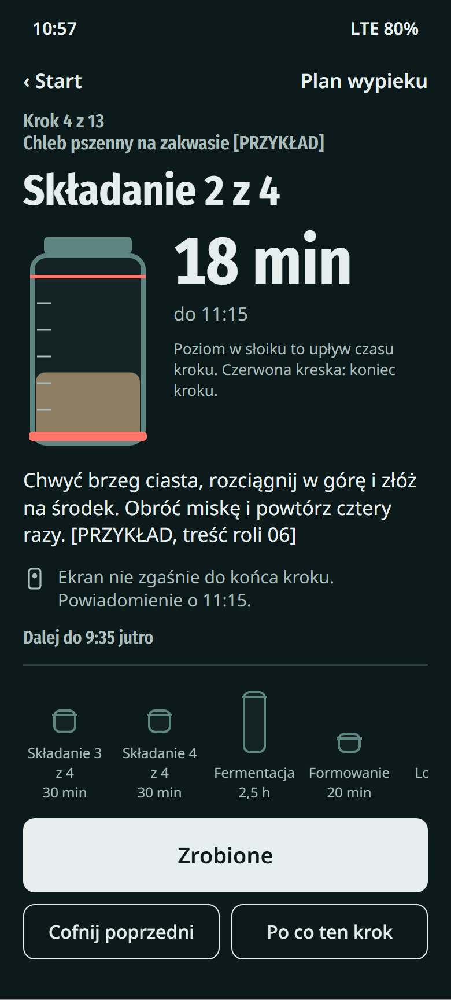
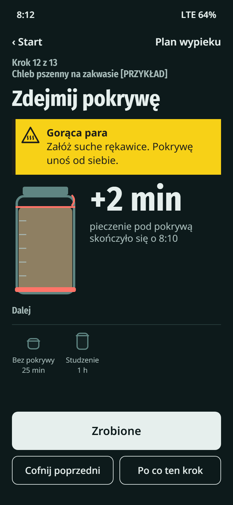
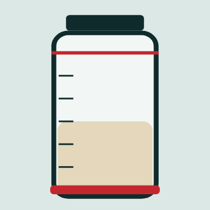
Tytuły: Fira Sans Condensed. Paleta: biel, szkło, tusz butelkowy, gumka.Każdy krok ma taśmę z godziną pisaną markerem, jak słoik i miska w kuchni.
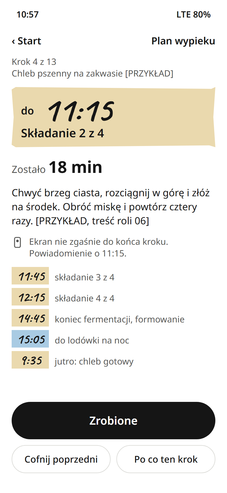
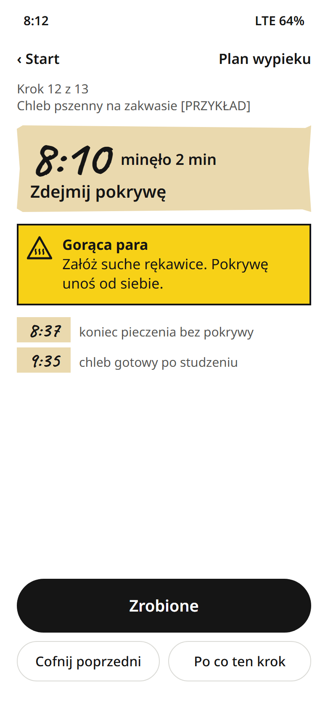
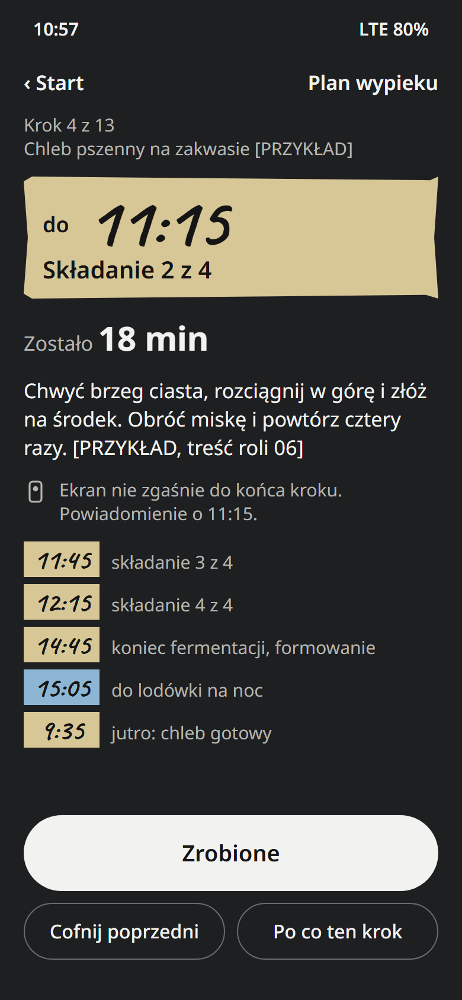
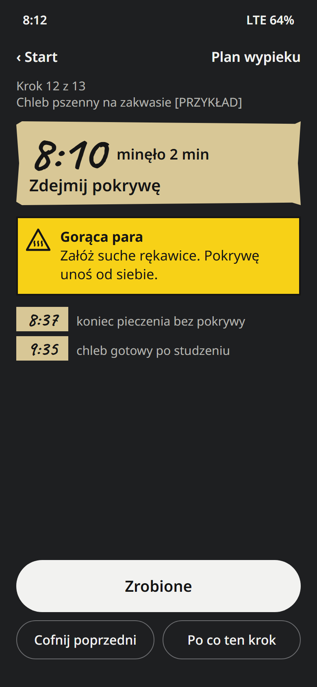
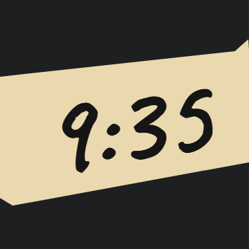
Godziny: Caveat. Paleta: biel, marker, taśma, taśma lodówki.| Kierunek | Pole | Pokrywa się z kartą kontrolną albo kalibracją | Zmiana |
|---|---|---|---|
| A | paleta | (a) brąz i krem | ratan tylko na zwojach z danymi; tło neutralne zamiast kremu; akcent „noc” |
| A | element | (a) okrągły licznik czasu | spirala niesie kroki i ich długości, nie procent; minuty poza spiralą; zrobione grubsze, nie tylko inną barwą |
| A | ruch | (a) postęp okręgu na żywo | ruch tylko po „Zrobione” |
| A | układ | (b) przycisk na dole | zostaje: pasek kciuka z decyzji DEC-09 a i kontekstu rąk zajętych |
| B | paleta (ciemny) | kalibracja: prawie czarne tło + cynobrowy akcent | tło zabarwione szkłem; czerwień tylko na kreskach danych, nigdy na przycisku |
| B | układ | kalibracja: duża liczba + mała etykieta | liczba jako odczyt skali słoika, bez statystyk; ryzyko nazwane |
| B | element | klisza kategorii: słoik | bez bąbelków i twarzy; słoik niesie czas, start i koniec kroku |
| C | paleta (ciemny) | (b) grafit + bursztyn | bez akcentu: jedynym kolorem jest taśma |
| C | układ | (b) pionowa oś z kropkami | godziny jako taśmy, bez osi |
| A, B, C | „A · B”, wersaliki, emoji | kalibracja | usunięte |